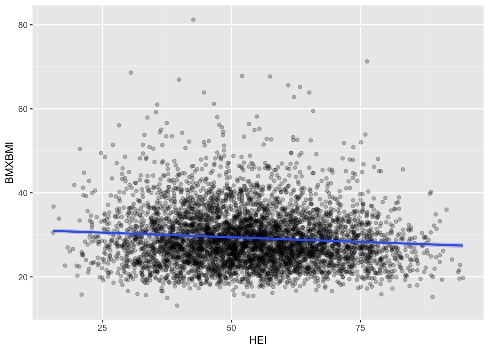
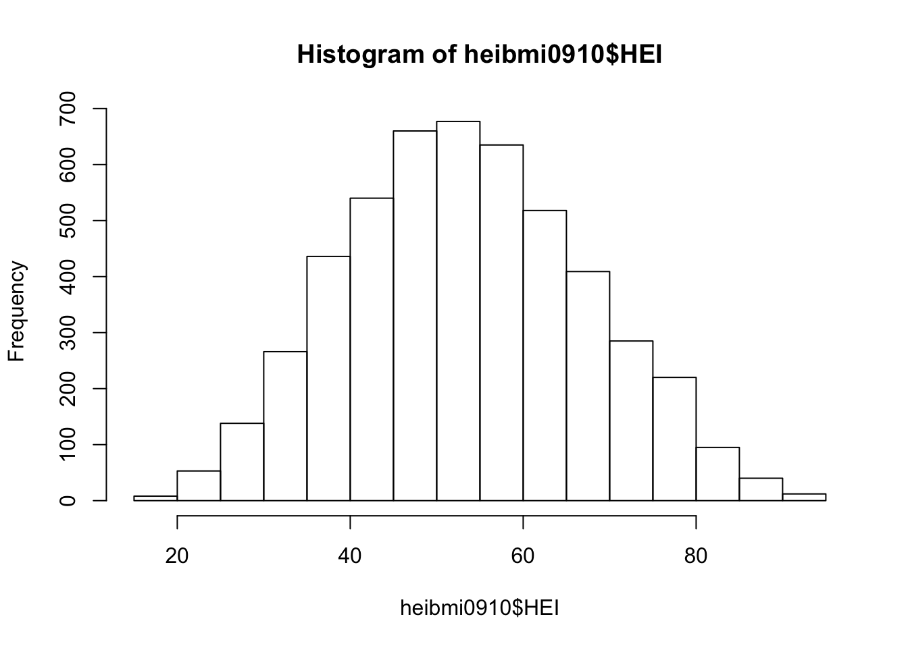
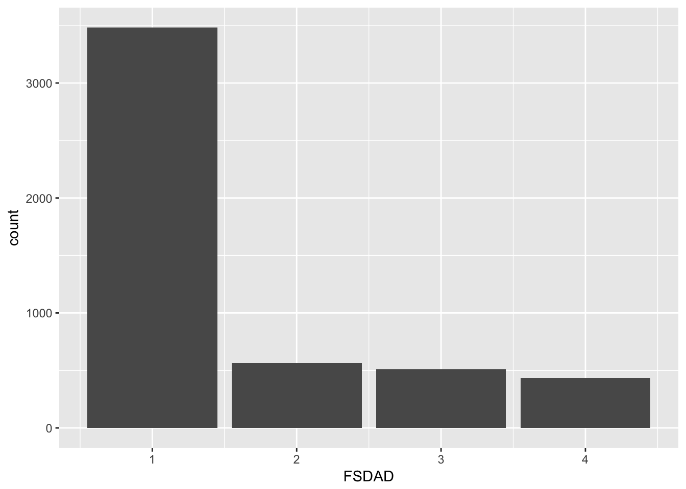

This vignette will cover two typical analyses that HEI scores might be used in and will highlight how this package is employed in the process.
library(hei)
library(ggplot2)
library(dplyr)We’ll be using data for both days (which is the default).
fped0910 <- get_fped("2009/2010", day = "both")
diet0910 <- get_diet("2009/2010", day = "both")
demo0910 <- get_demo("2009/2010")
hei0910 <- hei(fped0910,diet0910,demo0910)We will now conduct a linear regression analysis to examine the relationship between Body Mass Index and HEI scores. First select only the relevant columns from the output data set.
hei0910 <- hei0910 %>%
select(SEQN, RIDAGEYR, HEI)Then, using the nhanesA package, pull down NHANES body measures data from the web. Select the relevant columns and filter out those rows that contain missing data.
Merge the BMI data with our HEI data. We will also restrict our analysis to adults (age 20 and over).
heibmi0910 <- merge(hei0910, BMX_0910, by = "SEQN") %>%
filter(RIDAGEYR > 19)We can produce a scatter plot (using a function from the car package) visualizing the distributions of BMI and HEI scores as well as their relationship to each other.
ggplot(heibmi0910, aes(HEI, BMXBMI)) +
geom_point(alpha = 0.25) +
geom_smooth(method = "lm")
The distribution of HEI scores appears to be normally distributed (an assumption of linear regression).
hist(heibmi0910$HEI)
We see that HEI is a highly significant predictor of BMI, though the effect size is small.
heibmi0910.lm <- lm(BMXBMI ~ HEI, data=heibmi0910)
summary(heibmi0910.lm)##
## Call:
## lm(formula = BMXBMI ~ HEI, data = heibmi0910)
##
## Residuals:
## Body Mass Index (kg/m**2)
## Min 1Q Median 3Q Max
## -16.720 -4.645 -1.029 3.415 51.488
##
## Coefficients:
## Estimate Std. Error t value Pr(>|t|)
## (Intercept) 31.642861 0.382406 82.747 < 2e-16 ***
## HEI -0.044137 0.006933 -6.366 2.11e-10 ***
## ---
## Signif. codes: 0 '***' 0.001 '**' 0.01 '*' 0.05 '.' 0.1 ' ' 1
##
## Residual standard error: 6.826 on 4990 degrees of freedom
## Multiple R-squared: 0.008057, Adjusted R-squared: 0.007858
## F-statistic: 40.53 on 1 and 4990 DF, p-value: 2.108e-10This next example will analyze the relationship between HEI and food security. As before, we first select only the relevant columns from the original output data set.
hei0910 <- hei0910 %>%
select(SEQN, RIDAGEYR, HEI)Then, using the nhanesA package, pull down NHANES food security data from the web. This data includes an “Adult food security category” (FSDAD), which we will use for the analysis. Select the relevant columns and filter out those rows that contain missing data.
Merge the food security data with our HEI data. We will also restrict our analysis to adults (age 20 and over).
heifsq0910 <- merge(hei0910, FSQ_0910, by = "SEQN") %>%
filter(RIDAGEYR > 19)We can produce a bar plot to approximate the distribution of individuals across the four categories (1 meaning totally secure, 4 representing very little security).

The average score for those in group 1 appears to be quite a bit higher than the rest of the groups.
## # A tibble: 4 x 2
## FSDAD `mean(HEI)`
## <S3: labelled> <dbl>
## 1 1 54.90443
## 2 2 50.77337
## 3 3 49.32038
## 4 4 49.21335We see that the difference between the secure group and each of the other groups is highly significant.
heifsq0910$FSDAD <- relevel(factor(heifsq0910$FSDAD), ref="1")
heifsq0910.lm <- lm(HEI ~ FSDAD, data=heifsq0910)
summary(heifsq0910.lm)##
## Call:
## lm(formula = HEI ~ FSDAD, data = heifsq0910)
##
## Residuals:
## Min 1Q Median 3Q Max
## -38.341 -9.865 -0.505 9.303 40.399
##
## Coefficients:
## Estimate Std. Error t value Pr(>|t|)
## (Intercept) 54.9044 0.2328 235.828 < 2e-16 ***
## FSDAD2 -4.1311 0.6232 -6.629 3.73e-11 ***
## FSDAD3 -5.5841 0.6509 -8.579 < 2e-16 ***
## FSDAD4 -5.6911 0.6980 -8.153 4.44e-16 ***
## ---
## Signif. codes: 0 '***' 0.001 '**' 0.01 '*' 0.05 '.' 0.1 ' ' 1
##
## Residual standard error: 13.74 on 4991 degrees of freedom
## Multiple R-squared: 0.02878, Adjusted R-squared: 0.0282
## F-statistic: 49.3 on 3 and 4991 DF, p-value: < 2.2e-16